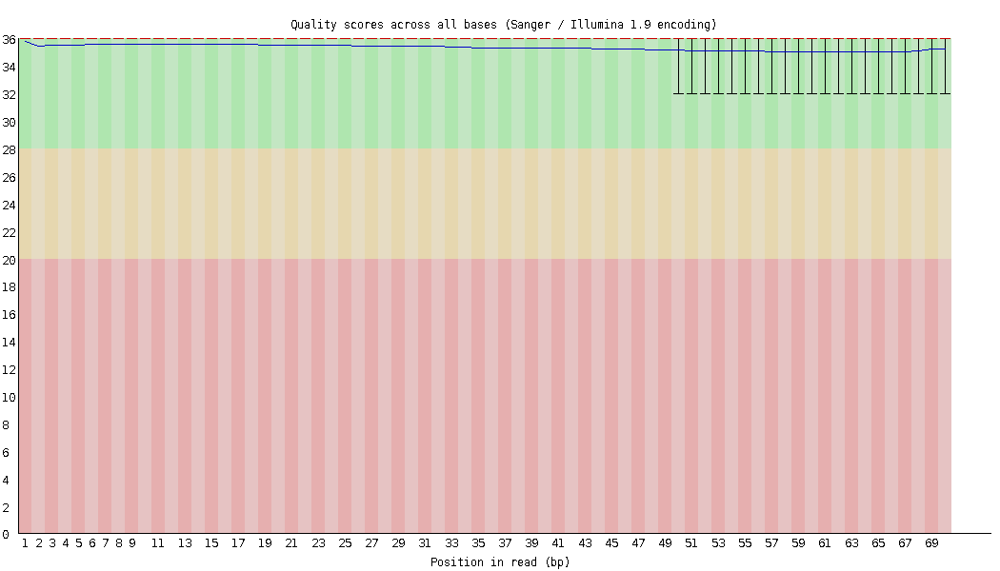
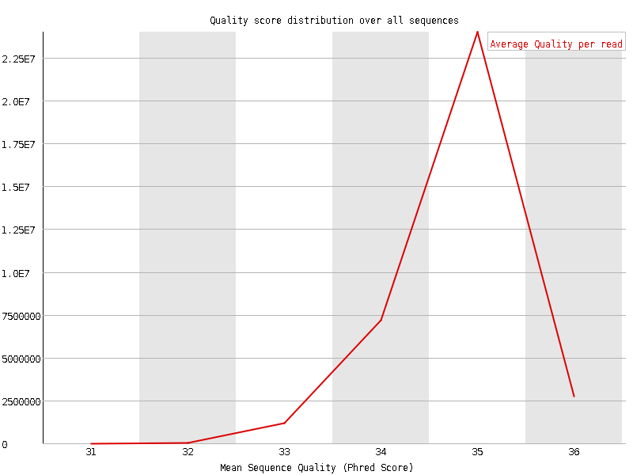
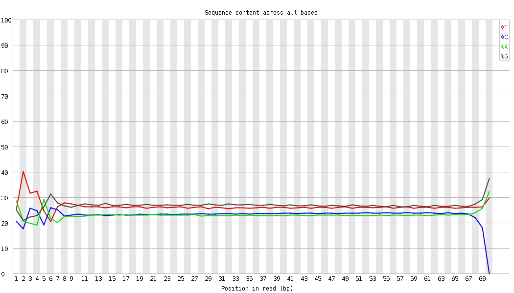
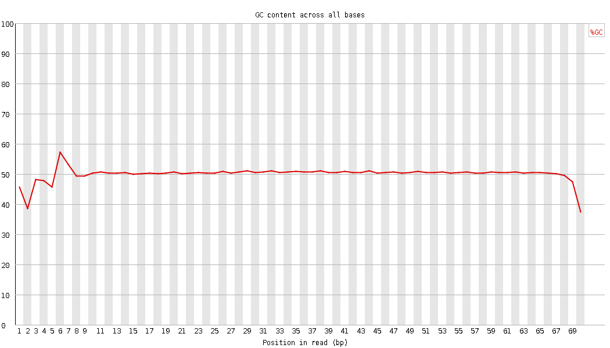
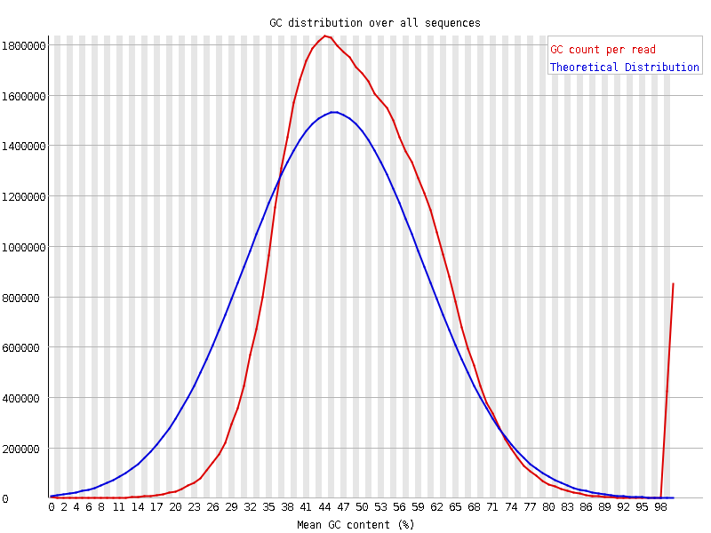
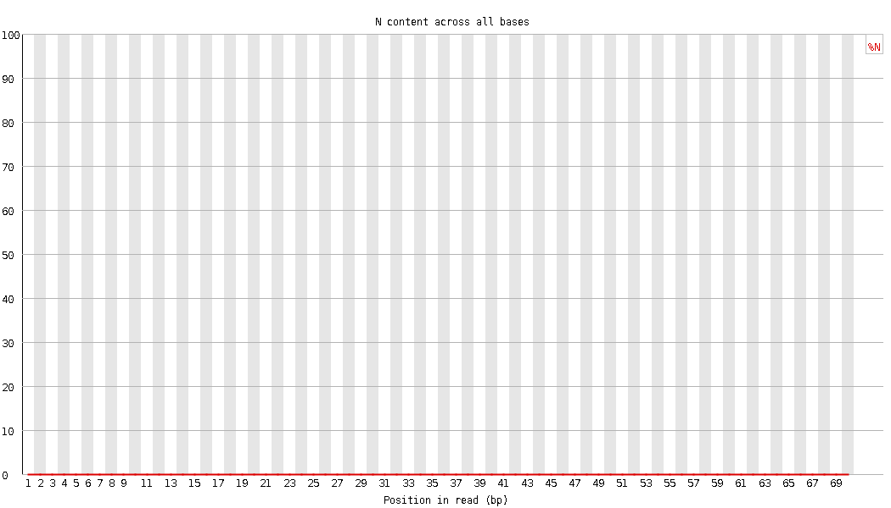
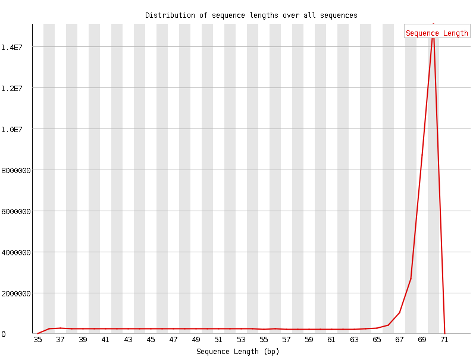
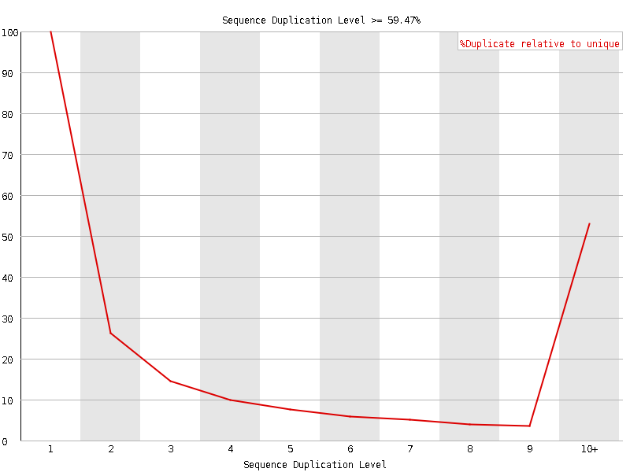
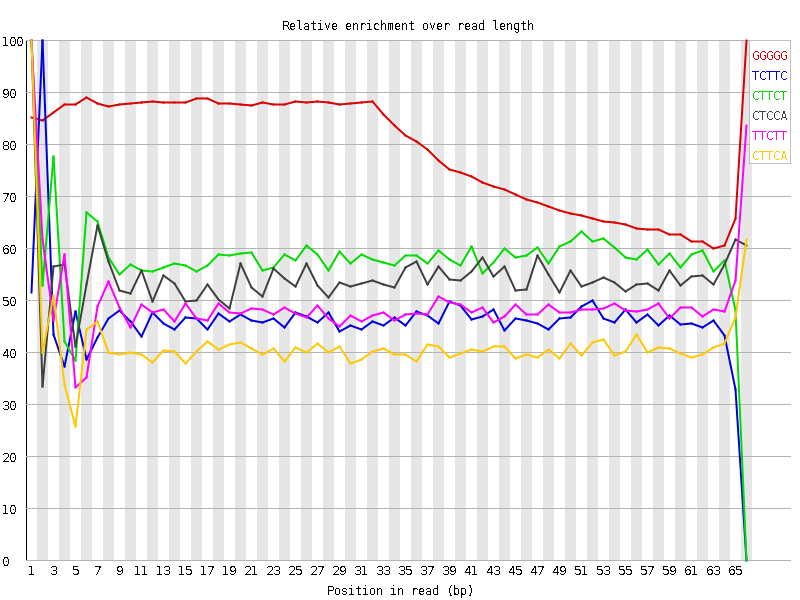

![[OK]](Icons/tick.png) Basic Statistics
Basic Statistics
| Measure | Value |
|---|---|
| Filename | SRR13389807.fastq |
| File type | Conventional base calls |
| Encoding | Sanger / Illumina 1.9 |
| Total Sequences | 35268724 |
| Filtered Sequences | 0 |
| Sequence length | 36-70 |
| %GC | 50 |
Per base sequence quality

Per sequence quality scores

![[FAIL]](Icons/error.png) Per base sequence content
Per base sequence content

Per base GC content

Per sequence GC content

Per base N content

![[WARN]](Icons/warning.png) Sequence Length Distribution
Sequence Length Distribution

Sequence Duplication Levels

Overrepresented sequences
| Sequence | Count | Percentage | Possible Source |
|---|---|---|---|
| GGGGGGGGGGGGGGGGGGGGGGGGGGGGGGGGGGGGGGGGGGGGGGGGGGGGGGGGGGGGGGGGGGGGGG | 404720 | 1.1475323008567024 | No Hit |
Kmer Content

| Sequence | Count | Obs/Exp Overall | Obs/Exp Max | Max Obs/Exp Position |
|---|---|---|---|---|
| GGGGG | 50501245 | 16.494528 | 20.738615 | 66 |
| TCTTC | 6827395 | 3.0950544 | 6.650328 | 2 |
| CTTCT | 6674595 | 3.0257857 | 5.1913133 | 1 |
| CTCCA | 5099655 | 3.0092905 | 5.532303 | 1 |
| TTCTT | 7112545 | 2.8358395 | 5.774574 | 1 |
| CTTCA | 5307805 | 2.7547464 | 6.6369004 | 1 |
| TCCAG | 5294450 | 2.7090378 | 6.255511 | 2 |
| TTCCA | 4549620 | 2.361249 | 5.4602695 | 1 |
| TTCAG | 4338150 | 1.9522803 | 5.854836 | 2 |
| TTTCA | 4167680 | 1.9024112 | 5.3222036 | 1 |
| ATCCA | 2831840 | 1.6826304 | 5.1546364 | 1 |